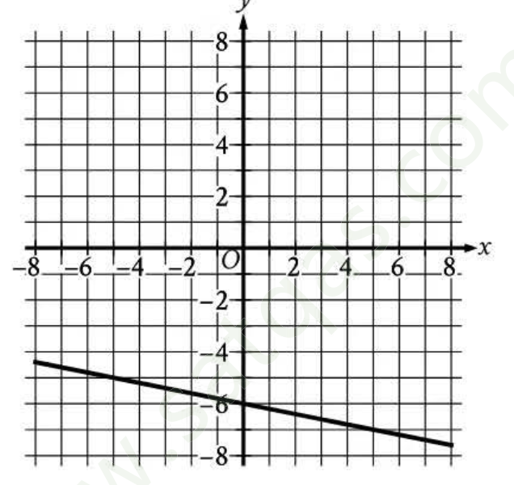
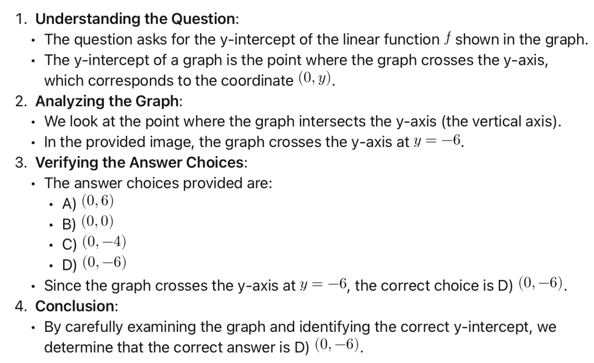

Math M1 · Q1 csv 1
yellowkey correctkey Dtranscription highLinear functions · easy
Converted
The graph of the linear function \(f\) is shown, where \(y = f(x)\).

r2:sat/question_images/Screenshot_2024-06-29_at_23.29.23.pngWhat is the y-intercept of the graph of \(f\)?
- A\((0, 6)\)
- B\((0, 0)\)
- C\((0, -4)\)
- D\((0, -6)\)
Original
sat/question_images/Screenshot_2024-06-29_at_23.29.23.pngpassage: The graph of the linear function f is shown, where y = f(x). question: What is the y-intercept of the graph of f? a: (0,6) b: (0,0) c: (0,-4) d: (0,-6)
Issues
- other Graph screenshot carries a third-party watermark (diagonal 'satqas.com'-style text). Consider redrawing.
Blind solves
- solver_1 (Opus):
Dhigh The line crosses the y-axis at y = -6 in the graph, so the y-intercept is (0, -6). - solver_2 (Sonnet):
Dhigh The line crosses the y-axis at (0, -6) in the graph.
Explanation (bank)
1. Understanding the Question:
- The question asks for the y-intercept of the linear function \(f\) shown in the graph.
- The y-intercept of a graph is the point where the graph crosses the y-axis, which corresponds to the coordinate \((0, y)\).
2. Analyzing the Graph:
- We look at the point where the graph intersects the y-axis (the vertical axis).
- In the provided image, the graph crosses the y-axis at \(y = -6\).
3. Verifying the Answer Choices:
- The answer choices provided are:
- A) \((0, 6)\)
- B) \((0, 0)\)
- C) \((0, -4)\)
- D) \((0, -6)\)
- Since the graph crosses the y-axis at \(y = -6\), the correct choice is D) \((0, -6)\).
4. Conclusion:
- By carefully examining the graph and identifying the correct y-intercept, we determine that the correct answer is D) \((0, -6)\).
